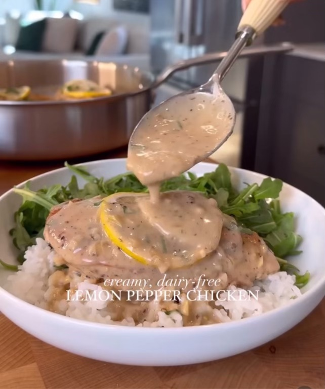

Lemon Pepper Chicken

Dairy Free Lemon Pepper Chicken
Tender chicken breasts in a creamy, and craveable lemon pepper sauce
Ingredients
- 2 lbs chicken breasts
- salt and pepper to season
- 3 tbsp avocado oil, divided
- 1 large shallot, minced
- 2 cloves garlic, minced
- 1 tbsp ground pepper
- 1 cup chicken bone broth (or chicken broth) + 2 tbsp
- 13 oz coconut milk
- 1 lemon, juice and zest
- 1 tbsp arrowroot starch
- for serving: prepared rice, arugula, and chopped fresh parsley
- Season your chicken breasts on both sides with salt and pepper
- Heat 2 tbsp of avocado oil in a large skillet over medium high heat
- Add your chicken to the skillet and sear on both sides for a 4-5 minutes until nice and golden
- Remove the chicken from the skillet, lower the heat to medium, and add another sbsp of avocado oil
- Add the shallot and saute for 2-3 minutes until softened
- Add the garlic and pepper and cook for 1-2 minutes until fragrant
- Add your chicken bone broth and deglaze the pan, scraping up any bits that have stuck to the bottom
- Add the coconut milk, lemon juice, and lemon zest and stir to combine
- Return the chicken to the skillet, bring the sauce to a simmer, then reduce the heat to low, cover, and cook for 10-12 minutes
- Uncover and push your chicken breasts to the side
- Make a slurry with your arrowroot starch by combining the starch with 2 tbsp of chicken bone broth, stirring so there are no lumps
- Whisk the slurry into the sauce, stir everything together, basting the chicken witht he sauce
- Remove from heat and serve with lemon slice, more fresh cracked pepper, and chopped fresh parsley
- Enjoy!